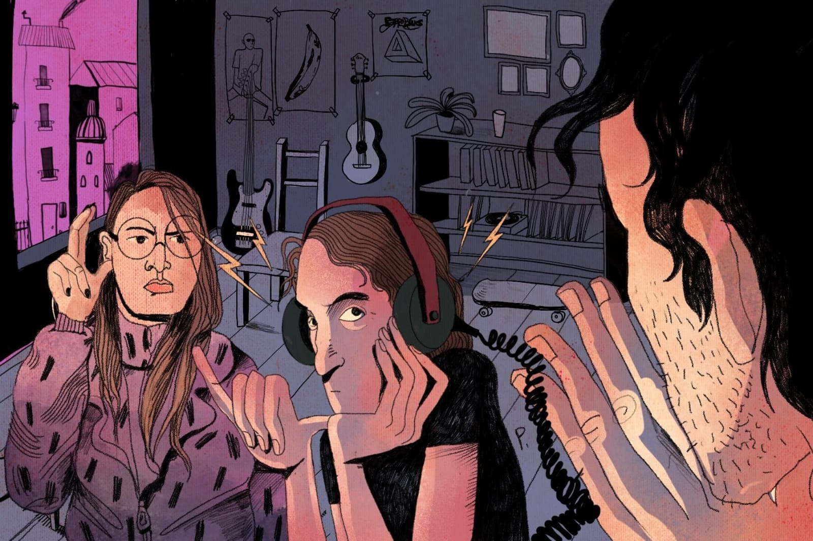
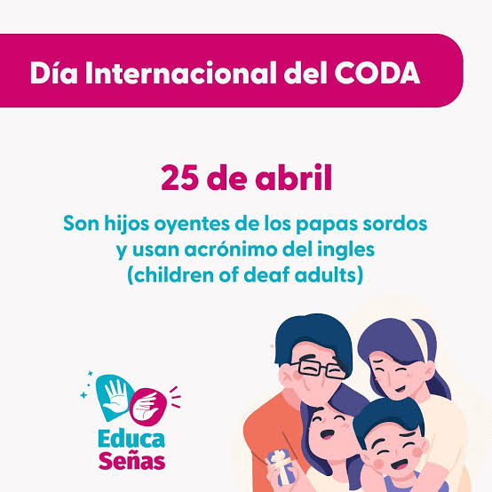

¿QUÉ SIGNIFICA CODA?

Los CODA (Children of Deaf Adults, por sus siglas en inglés) son hijos oyentes de padres sordos. Este término hace referencia a una población única con experiencias y desafíos propios, ya que crecen en un entorno donde la lengua de señas es la lengua primaria de sus padres.
Los CODA suelen crecer inmersos en la cultura sorda, donde las interacciones sociales, familiares y a menudo incluso la educación, se desarrollan a través de la lengua de señas. La cultura sorda tiene su propia historia, valores, tradiciones y formas de comunicarse, y los CODA a menudo se sienten como "puentes" entre la comunidad sorda y la oyente.
Los CODA pueden experimentar una identidad dividida, ya que son parte de una familia que está inmersa en la cultura sorda, pero también son parte de la sociedad oyente. Esto puede generar desafíos en términos de pertenencia y adaptabilidad, ya que a veces se sienten demasiado "sordos" en contextos oyentes y demasiado "oyentes" en contextos sordos.

Los padres sordos a menudo utilizan la lengua de señas para comunicarse con sus hijos CODA. Sin embargo, los padres sordos también pueden enseñar a sus hijos a hablar (aunque muchos CODA hablan y firman simultáneamente), y las interacciones entre padres e hijos son generalmente muy cercanas y afectuosas.
En muchos casos, los CODA tienen que lidiar con la dualidad cultural al estar en ambientes donde predominan las personas oyentes (escuela, trabajo, etc.) y deben adaptarse a las expectativas de esa sociedad. A veces se sienten aislados de los oyentes, ya que son percibidos como diferentes, pero tampoco encajan completamente en la comunidad sorda, ya que no comparten la misma experiencia de la sordera.
Muchos CODA sienten un gran orgullo de sus padres sordos, pero también puede haber un sentimiento de sacrificio, ya que a menudo actúan como los "puentes" entre las dos culturas, mediando la comunicación en situaciones cotidianas.